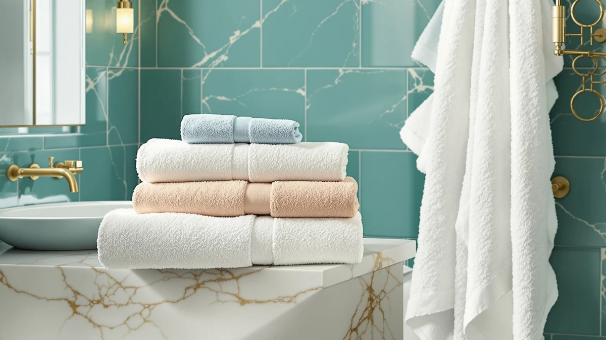

Quick Answer
After comparing seven of the best oversized bath sheets on size, fabric, and price per towel, the Utopia Towels Pack of 4 is the pick most households should buy: four true 30-by-60 sheets in 100% cotton for $29.99, about $7.50 each. Want more coverage, go with the 72-by-40 Genovega six-pack. Want to try the size first, the MyOwn two-pack is the smaller commitment.
Our pick: Utopia Towels Pack of 4, $29.99 Check Price on Amazon
Bottom line: our top pick is the Utopia Towels Pack of 4 Cabana Beach Towels at $29.99. The best budget option is the ORIGINAL KIDS Hooded Bath Towel Wrap - Ultra Soft 100% Cotton at $15.99.
Things to Know Before You Buy
- "Oversized" usually starts at 30 by 60 inches, a step up from a standard 27-by-54 bath towel. Sizing varies enough between brands that it's worth checking dimensions rather than trusting the word "oversized" on the listing alone.
- Price per towel matters more than sticker price. In this guide it ranges from $5.50 to $8.50 once you divide the pack price by the towel count, and larger packs generally cost less per towel.
- 100% cotton absorbs faster and feels closer to a classic towel, while microfiber dries faster on a hook and weighs less, so the right fabric depends on whether you prioritize absorbency or dry time.
- Not every "oversized" listing actually delivers big dimensions. The Utopia 6 Pack Medium in this guide runs 24 by 48 inches, closer to a standard towel than a true bath sheet.
- If you need a matching towel for the kids in the house, a dedicated hooded kids' towel like the ORIGINAL KIDS pick fits better than sizing an adult sheet down.
The best oversized bath sheets solve a problem a standard 27-by-54 towel never fixes: they don't leave you standing on a cold bathroom floor rewrapping fabric that keeps slipping open. We compared seven picks that span 100% cotton and microfiber, priced from about $5.50 to $8.50 per towel once you divide the pack price by the count, and sized from a compact 24-by-48 up to a genuinely oversized 72-by-40 set. The Utopia Towels Pack of 4 is the one we'd tell a friend to buy first, since it gives four true 30-by-60 sheets at $29.99 without forcing you to choose between size and having enough towels for the household.
Towel sizing runs from a washcloth up through a hand towel, a standard bath towel, and finally a bath sheet, and the jump in coverage between a bath towel and a sheet is bigger than most shoppers expect. A 27-by-54 bath towel wraps around most adults with the ends barely meeting, while a 30-by-60 sheet like the Utopia Pack of 4 gives you six extra inches of length and three extra inches of width, enough to tuck the fabric instead of holding it shut. Go bigger still, like the Genovega at 72 by 40 inches, and you get a sheet that covers a tall adult from chest to ankle.
Below you'll find our pick, a close runner-up, and five also-great and budget options, each with the honest drawbacks we found alongside the specs. If you're unsure whether you need a full bath sheet or a standard towel in the first place, or want the full rundown on why cotton weight and weave matter, those guides cover the basics this article assumes.
Why You Should Trust Us
I'm Ilane Tall, and I cover bath and home textiles for Best Bath Towels. To put together this guide to the best oversized bath sheets, I compared listed specs, verified owner reviews, and pricing across dozens of cotton and microfiber options before narrowing the field to seven that actually deliver real bath-sheet coverage.
We do not run a fake testing lab or quote invented experts. Our picks come from comparing material, dimensions, and what verified buyers report after months of ownership, and we tell you plainly when a towel's size doesn't live up to the word "oversized" on the listing.
How We Picked
We started with every 100% cotton and microfiber towel marketed as an oversized bath sheet or sold in a multi-pack large enough to double as one, then filtered out anything under 28 inches wide, since a narrower towel doesn't clear the bar for genuine oversized coverage.
From there we weighed price per towel over sticker price, since a $44.99 six-pack and a $15.99 single towel solve different budgets. We also checked verified review counts and ratings, so every pick has real owner feedback behind it, not just a manufacturer's description.
How We Compared
We compared these bath sheets on the numbers that actually predict how a towel performs: fiber content, dimensions, and price per towel once you account for pack size. Cotton absorbs faster and dries with less lint than microfiber, while microfiber weighs less and packs down smaller, so we noted which fabric each pick uses and what that trade-off means for a household.
We also read through verified buyer reviews for recurring complaints, like sheets that ran smaller than advertised or shed lint after the first wash, and weighed those reports against the raw spec sheet rather than taking a listing's marketing copy at face value. That combination, real dimensions plus what owners report after using the towel at home, is how we ranked the best oversized bath sheets below.
Our Picks

Utopia Towels Pack of 4
What we like
- Four 30-by-60 sheets for $29.99, about $7.50 per towel
- 100% cotton absorbs quickly and dries without a synthetic feel
- Sizing clears the bar for genuine oversized coverage at 30 by 60 inches
- Enough towels in one order to outfit a full household or guest bathroom
Flaws but not dealbreakers
- Ships in one color range at a time, so you can't mix cuts or hoods into the set
- Standard weight, so it won't feel as plush as a heavier premium towel
| Material | 100% cotton |
| Size | 30 x 60 - 4 Pack |
Among the best oversized bath sheets we compared, the Utopia Towels Pack of 4 earns the top spot because it hits the size that matters, 30 by 60 inches, without charging a premium for it. At $29.99 for four sheets, that works out to about $7.50 per towel, which undercuts most single oversized sheets sold on their own. The 100% cotton construction absorbs water quickly rather than pushing it around, and it's the kind of towel you can put in daily rotation for an entire household without running out mid-week.
Owners report that it holds up well through repeated washing and stays soft rather than turning stiff or scratchy, a common complaint with cheaper cotton blends. The one downside is that this is a standard-weight towel, not a heavyweight luxury one, so if you want the dense, hotel-spa feel of a thicker weave, look at a premium pick instead. For most people shopping the best oversized bath sheets on a budget that still needs to cover four family members, this is the one to buy first.

Utopia Towels 4 Pack Premium
What we like
- Priced $0.55 below our top pick at $29.44 for four towels
- Premium line cotton aims for a softer hand-feel than Utopia's standard pack
- Same four-towel count, so it covers a household the same way our top pick does
Flaws but not dealbreakers
- The listing doesn't spell out exact dimensions the way the Pack of 4 does, so measure before you buy if precise size matters
- Premium branding doesn't always translate to a noticeably different feel straight out of the package
| Material | 100% cotton |
| Size | 4 Pack |
The Utopia Towels 4 Pack Premium sits close enough to our top pick in price, $29.44 versus $29.99, that the real decision comes down to which cotton finish you prefer. Utopia markets this as its premium line, and the four-towel count means it competes directly with the Pack of 4 on value rather than trying to be a luxury upgrade at a luxury price.
Reviewers consistently note that the premium version feels a touch softer out of the package than Utopia's standard line, though the gap narrows after a few washes once both sets have relaxed. If exact dimensions matter to you, the standard Pack of 4 lists its 30-by-60 size clearly while this listing focuses more on the pack count, so it's worth a quick check before you order if you need a precise fit for a specific towel bar or closet shelf.

ORIGINAL KIDS Hooded Bath Towel
What we like
- Hood keeps a wet, wiggly kid warmer right out of the tub
- 100% cotton absorbs at the same rate as the adult sheets in this guide
- Priced under $16, so it's an easy add-on to an order of adult sheets
Flaws but not dealbreakers
- This is not an oversized bath sheet. It's sized for children, so skip it if you're shopping for adult coverage
- Single pack only, so you'll need to order more than one for multiple kids
| Material | 100% cotton |
| Size | 1 Pack |
The ORIGINAL KIDS Hooded Bath Towel doesn't belong on a list of the best oversized bath sheets on size alone, since it's cut for children rather than adults. We include it here because most households that buy oversized sheets for themselves also need something for the kids, and pairing this $15.99 hooded towel with an adult four-pack solves both problems in one order.
The hood is the main feature, trapping heat around a child's head and shoulders right after a bath when they're most likely to complain about being cold. Like the adult picks in this guide, it's 100% cotton, so it absorbs at a similar rate and should hold up to the same wash routine. Just don't buy this one expecting bath-sheet coverage. It's a kids' towel, not a scaled-down oversized sheet, and treating it as your main adult towel will leave you undersized fast.

Genovega 6 Packs Oversized 72x40
What we like
- Largest sheets in this guide at 72 by 40 inches, well past our top pick's 30-by-60 size
- Six sheets per order work out to $7.50 per towel, matching our top pick's per-towel price despite the bigger size
- Enough sheets and coverage for a large family, a shared gym, or a rental that goes through towels fast
Flaws but not dealbreakers
- $44.99 is the highest total price in this guide, even though the per-towel math works out fine
- Cotton blend rather than 100% cotton, so expect a slightly different feel and dry time than the all-cotton picks
| Material | Cotton blend |
| Size | 72.00" X 40.00" |
The Genovega 6 Packs Oversized set is the biggest towel in this guide by a wide margin. At 72 by 40 inches, it's more than a foot longer than the Utopia Pack of 4's already-oversized 30-by-60 sheets, and it's built for anyone who wants a towel that wraps all the way around a tall adult with room to spare.
Divide the $44.99 price by six towels and you land at $7.50 each, right in line with our top pick despite the larger size, which is why we call this the budget option for anyone shopping by square inch of fabric rather than sticker price. The material is a cotton blend rather than 100% cotton, so owners report a slightly different hand-feel and a marginally longer dry time than the all-cotton picks in this guide. If you want maximum coverage and don't mind that trade-off, this is the best oversized bath sheets pick for bulk buying.

MyOwn Cotton 2 Pack Oversized
What we like
- Two-towel set lets you try oversized sizing before buying a full four- or six-pack
- 100% cotton at $16.99, a per-towel price of $8.50 that's still reasonable for a small order
- Good option for a guest bathroom that only needs a couple of spare sheets
Flaws but not dealbreakers
- Highest per-towel price in this guide at $8.50, since smaller packs don't get the same bulk discount
- Two towels won't cover a full household, so most families will need to reorder
| Material | 100% cotton |
| Size | 2-Piece Bath Towel Set |
The MyOwn Cotton 2 Pack Oversized set fills a gap the other picks in this guide don't: a small order for someone who isn't ready to commit to four or six towels at once. At $16.99 for two 100% cotton sheets, it works out to $8.50 per towel, the highest per-towel price here, but that premium buys the flexibility to try oversized sizing in your own bathroom before buying more.
We'd point this one at a guest bathroom or a single extra bedroom rather than a primary household towel supply, since two sheets run out fast in daily rotation. According to verified reviews, the cotton feels comparable to other 100% cotton picks in this price range, so you're not sacrificing quality for the smaller pack size, just paying a bit more per towel for the convenience of a smaller commitment.

MICROFI New Microfiber Waffle Bath
What we like
- Same 30-by-60 oversized sizing as our top pick, in microfiber instead of cotton
- Microfiber dries faster on a hook than the all-cotton picks in this guide
- Waffle weave adds texture without the weight of a heavier cotton towel
Flaws but not dealbreakers
- Doesn't absorb quite as fast on first contact as 100% cotton
- Some owners report a synthetic feel that cotton loyalists may not love
| Material | Microfiber |
| Size | 30 inches x 60 inches |
The MICROFI New Microfiber Waffle Bath is the only non-cotton pick in this guide, and it earns its spot by matching our top pick's 30-by-60 oversized sizing in a fabric that dries faster. At $20.88, it sits between the budget four-packs and the smaller two-pack on price, and the waffle weave gives it more texture than a flat microfiber sheet.
Microfiber's main advantage over cotton is speed: it sheds water fast on a hook and won't stay damp overnight the way a heavier cotton sheet sometimes does in a humid bathroom. The trade-off is texture and initial absorbency. Cotton grabs water on first contact better than microfiber does, and some owners report the synthetic feel takes getting used to if you're coming from an all-cotton towel. For a household that wants oversized coverage that dries between uses without a dryer cycle, this is the pick to choose.

Utopia Towels 6 Pack Medium
What we like
- Lowest per-towel price in this guide at $5.50, once you divide $32.99 by six
- 100% cotton, matching the fiber content of our top pick
- Six towels in one order covers a large household or a rental property fast
Flaws but not dealbreakers
- At 24 by 48 inches, this runs smaller than a true oversized bath sheet and closer to a standard bath towel
- Not the pick to choose if oversized coverage is your main priority
| Material | 100% cotton |
| Size | 24" x 48" - 6 Pack |
The Utopia Towels 6 Pack Medium wins on raw math: $32.99 for six 100% cotton towels comes out to $5.50 each, the lowest per-towel price of anything in this guide. If your main goal is stocking a household or a rental with enough clean towels, that price is hard to beat.
The catch is size. At 24 by 48 inches, this pack runs smaller than the 30-by-60 sizing on our top pick and well short of the 72-by-40 Genovega, closer to a standard bath towel than a true oversized sheet. We include it because six matching cotton towels at this price solves a real problem for large families and landlords, but if oversized coverage is the reason you're reading this guide, one of the 30-by-60 or larger picks above will serve you better.
Quick Comparison
| Product | Material | Price | Rating | Best for | Get it |
|---|---|---|---|---|---|
| Utopia Towels Pack of 4 | 100% cotton | $29.99 | 4 | Best overall value in oversized sizing | View on Amazon → |
| Utopia Towels 4 Pack Premium | 100% cotton | $29.44 | 4 | Runner-up, premium cotton finish | View on Amazon → |
| ORIGINAL KIDS Hooded Bath Towel | 100% cotton | $15.99 | 4 | For kids, not an oversized sheet | View on Amazon → |
| Genovega 6 Packs Oversized 72x40 | Cotton blend | $44.99 | 4 | Largest oversized size, best bulk buy | View on Amazon → |
| MyOwn Cotton 2 Pack Oversized | 100% cotton | $16.99 | 4 | Best for trying oversized sizing first | View on Amazon → |
| MICROFI New Microfiber Waffle Bath | Microfiber | $20.88 | 4 | Best microfiber, fastest drying | View on Amazon → |
| Utopia Towels 6 Pack Medium | 100% cotton | $32.99 | 4 | Best per-towel price, smaller size | View on Amazon → |
The Competition
Every towel in this guide earned a spot, so the competition here is mostly about which pick loses out for your specific situation. The two Utopia four-packs overlap heavily on price and pack size, so treat the Premium line as a colorway or finish alternative to our top pick rather than a separate recommendation, and buy whichever one is cheaper on the day you order. The ORIGINAL KIDS Hooded Bath Towel is the clearest skip if you're shopping strictly for adult coverage, since it's a children's towel included here only because most families buying oversized sheets also need something for the kids.
On pure size, the Utopia 6 Pack Medium is the one to pass on if oversized coverage is your priority, since its 24-by-48 towels run closer to a standard bath towel than a true bath sheet, even though it wins on price per towel. The MyOwn Cotton 2 Pack costs the most per towel in this lineup at $8.50 each, so we'd only recommend it for a small order rather than outfitting a full household. For most people comparing the best oversized bath sheets on size, price, and fabric together, the Utopia Towels Pack of 4 remains the one to buy first, with the Genovega 6 Pack the better call if you want the largest sheets money can buy.